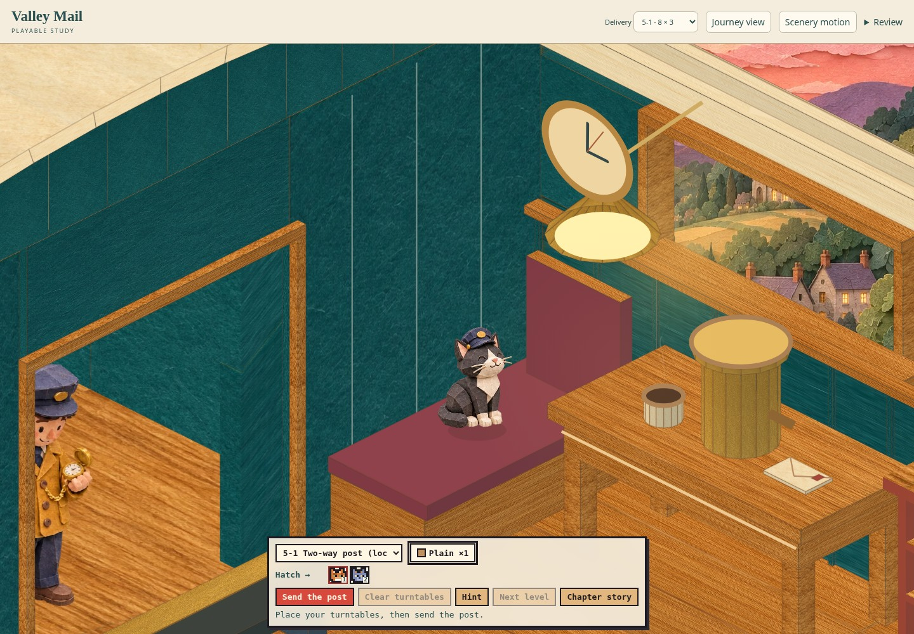
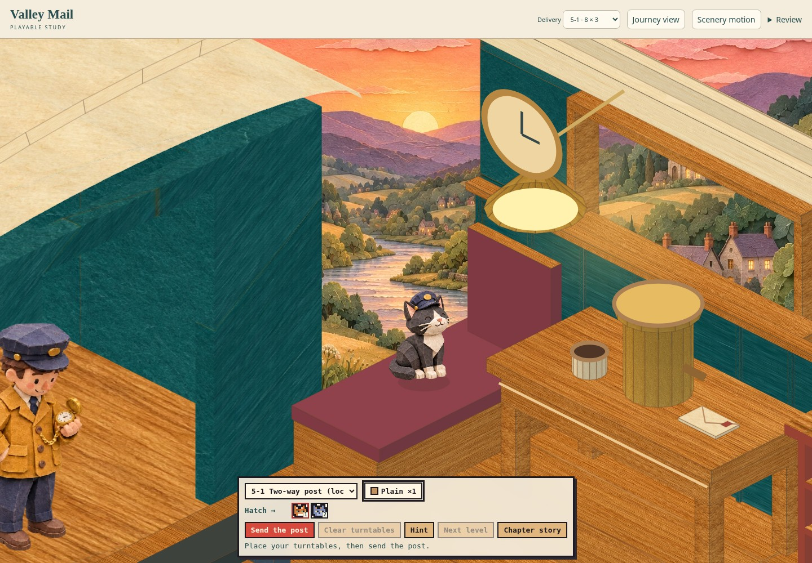
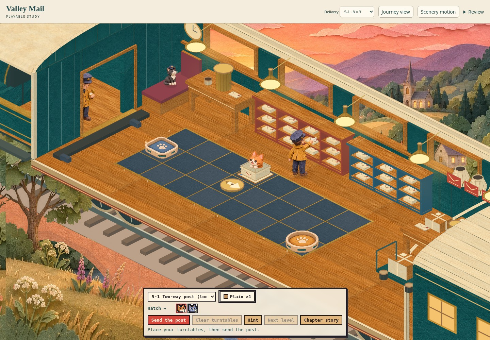
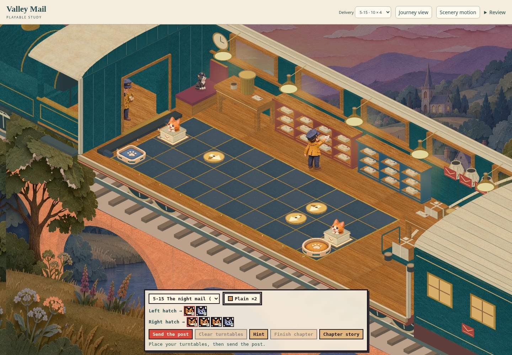
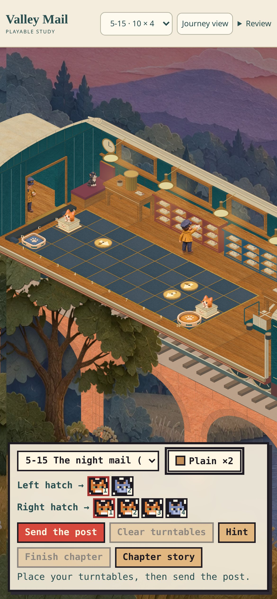
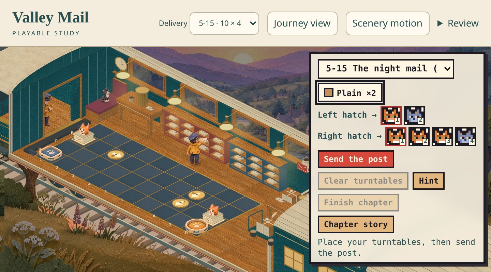

CATS BY POST · MAIL TRAINValley Mail
The carriage now has a continuous end wall behind the bench, with a framed passage into the cab. The next atmosphere pass adds warmer lamp pools at dusk, a working wall clock and a quiet curl from the tea mug. The sorter walks continuously into and out of the tea stop.
The carriage end

The wall meets the curved roof and rear panelling. The real doorway remains open.
Compare the previous opening

First and largest deliveries

5-1 · 8 × 3
5-15 · 10 × 4. Board and target colours are preserved.Postal life in motion
A complete 48-second scenery routine, captured at eight frames per second for review. This is sampled animation evidence, not a device performance measurement.
Phone layouts

Portrait · the full board remains clear of the controls.
Landscape · controls occupy their reserved side panel.Original textured water and large trees are retained. Gameplay, chapter timing and level data are unchanged; study progress stays separate from the main game. Physical-device performance and final art acceptance remain review items.